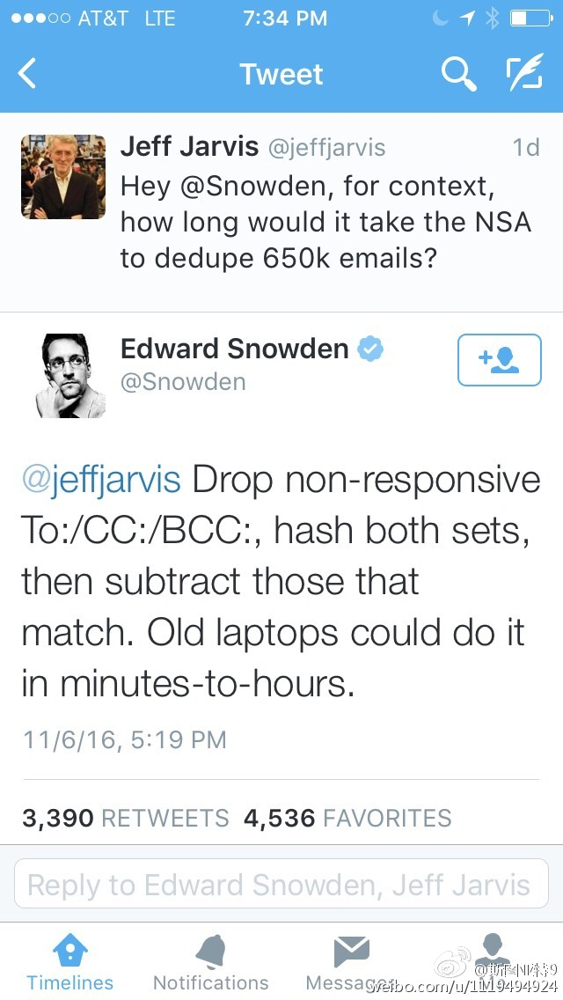

非常神奇，斯诺登在推特上回答了一个有关FBI调查希拉里的问题。有人问，NSA需要花多长时间给Weiner电脑上的6万5千封邮件去重（去掉他们之前调查过的），斯诺登回答说，两边邮件取哈希，然后两个集合做减法，旧笔记本也几个小时可以搞定。 
美国总统大选将在明天进行。明天也许是一次常规选举——传统蓝州归蓝，红州归红，最后看几个摇摆州结果；也许是一次颠覆的选举——特朗普拿下工人阶级铁盘的密歇根、宾夕法尼亚甚至威斯康辛，抑或希拉里靠拉丁裔的高投票率拿下亚利桑那。到底说好的沉默的大多数是否出现，是什么人，让我们拭目以待吧。